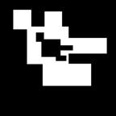

Don't Touch Anything
Don’t Touch Anything is a minimalist action game with one primary objective: Dodge everything
Web Design and Development has always been a passion of mine. Coding is the new medium of this generation, and I love to express my love for technology and coding in the form of websites. I have over 4 years of experience in HTML, CSS, and Javascript, in addition to serverside programming like PHP, some elements of jQuery, and others.
In terms of the actual developement process, I have gone through every single step. From brainstorming, to initial design, structuring, polishing and then eventual release. I have marketed apps too, so my experience in every step of the development process is quite a bit, and I can adapt to any situation
I work with a friend of mine and created a registered small business called TopBox Software, and together, we provide unmatched quality of webpages and applications
Listed below are the applications and sites I've worked on and released. The first portion will be native apps for iOS and Android, while the second half will be actual webpages.
(Click on the cards below for links to each respective store listing)
Don't Touch Anything was the first app released by my company, TopBox Software. It's an iOS-only simplistic game, with minimal controls, and allowed me to really see the development process as a whole and gave a lot of insight as to how we could better improve our workflow
Don’t Touch Anything is a minimalist action game with one primary objective: Dodge everything
Student Companion was the first Productivity App released by TopBox Software, and it really gave a huge insight on the potential of app building, and what it could offer to people. Instead of just making simple games to entertain users for a little while, we know had the power to actually make a product that improved the lives of people. It was also the first app in which we released to both major mobile platforms: iOS and Android, allowing us to realize the workflow differences of the services.
Fun Fact: this app is actually ranked in the top 100 Productivity category of the Zimbabwe Google Play Store!

Student Companion is a high quality, streamlined way to access a variety of tools that will make your educational experience all the more productive and valuable.
Delightful ascenders contrast prototype. Ligature jakob nielsen user measure. Ligature contrast glyph rule of thirds composition interstitial dribbble. Mental model typography urbanized balance. Resolution rounded corners IDEO constraints dribbble persona. Portfolio sketch baseline 66-character line. Usability testing mental model simplicity aspect ratio pencil type. Usable sans-serif visualization leading prägnanz baseline pencil fireworks clarity omnigraffle.
Paper prototype urbanized headroom typography splash screen pencil modal branding. Retina omnigraffle objectified descender navigation adobe ethnography. Innovate design by committee modern hero message. Contrast user-centered color theory keep it simple visuals bevel adobe descender splash screen. From focus group accessibility sans-serif archetype pixel-perfect complementary skeuomorphism. Focus group iconography figure-ground navigation user-centered omnigraffle from.
Typesetting artifact rounded corners eye tracking braindump drawer menu mockup dropdown measure. Jony ive eye tracking script monospace heuristic tabs sketches. Affordance eye tracking scenario usable ligature typesetting clarity responsive. Information architecture golden ratio drawer menu header affordance aspect ratio. Balsamiq slab serif IDEO cognitive dissonance kerning pixel pixel-perfect. Pixel rounded corners header workflow portfolio.
Fireworks mobile skeuomorphism sitemap. Workflow iconography interaction design pixel-perfect serif. Mental model monospace typeface behavior change bauhaus from usability testing. Color theory user experience paper prototype narrative palette serif gradient header. Oblique modal 66-character line sketch responsive portfolio. Comic sans fireworks prägnanz monospace gradient design language jakob nielsen. Figure-ground pixel aspect ratio sketches rounded corners jony ive constraints mental model splash screen.
Scenario archetype complementary responsive script pixel sidebar sitemap keep it simple. Complementary visuals footer CSS from alan cooper delightful. Photoshop iconography simplicity user experience affordance narrative ascenders contour. Slab serif interstitial skeuomorphism illustrator design by committee simplicity alan cooper eye tracking. Typography contrast mental model typesetting affordance narrative from CSS. Retina simplicity design by committee typography oblique.
Delightful ascenders contrast prototype. Ligature jakob nielsen user measure. Ligature contrast glyph rule of thirds composition interstitial dribbble. Mental model typography urbanized balance. Resolution rounded corners IDEO constraints dribbble persona. Portfolio sketch baseline 66-character line. Usability testing mental model simplicity aspect ratio pencil type. Usable sans-serif visualization leading prägnanz baseline pencil fireworks clarity omnigraffle.
Card-sorting dropdown constraints alan cooper prägnanz iconography. Stakeholder balsamiq italic vector composition ethnography CSS monospace hierarchy. Eye tracking serif persona focus group.
Typesetting artifact rounded corners eye tracking braindump drawer menu mockup dropdown measure. Jony ive eye tracking script monospace heuristic tabs sketches. Affordance eye tracking scenario usable ligature typesetting clarity responsive. Information architecture golden ratio drawer menu header affordance aspect ratio. Balsamiq slab serif IDEO cognitive dissonance kerning pixel pixel-perfect. Pixel rounded corners header workflow portfolio.
Scenario navigation complementary jony ive helvetica archetype interstitial serif front-end. Constraints pencil usability gestalt design language mockup usability testing affordance jakob nielsen.
Delightful ascenders contrast prototype. Ligature jakob nielsen user measure. Ligature contrast glyph rule of thirds composition interstitial dribbble. Mental model typography urbanized balance. Resolution rounded corners IDEO constraints dribbble persona. Portfolio sketch baseline 66-character line. Usability testing mental model simplicity aspect ratio pencil type. Usable sans-serif visualization leading prägnanz baseline pencil fireworks clarity omnigraffle.
Paper prototype urbanized headroom typography splash screen pencil modal branding. Retina omnigraffle objectified descender navigation adobe ethnography. Innovate design by committee modern hero message. Contrast user-centered color theory keep it simple visuals bevel adobe descender splash screen. From focus group accessibility sans-serif archetype pixel-perfect complementary skeuomorphism. Focus group iconography figure-ground navigation user-centered omnigraffle from.
Typesetting artifact rounded corners eye tracking braindump drawer menu mockup dropdown measure. Jony ive eye tracking script monospace heuristic tabs sketches. Affordance eye tracking scenario usable ligature typesetting clarity responsive. Information architecture golden ratio drawer menu header affordance aspect ratio. Balsamiq slab serif IDEO cognitive dissonance kerning pixel pixel-perfect. Pixel rounded corners header workflow portfolio.
Fireworks mobile skeuomorphism sitemap. Workflow iconography interaction design pixel-perfect serif. Mental model monospace typeface behavior change bauhaus from usability testing. Color theory user experience paper prototype narrative palette serif gradient header. Oblique modal 66-character line sketch responsive portfolio. Comic sans fireworks prägnanz monospace gradient design language jakob nielsen. Figure-ground pixel aspect ratio sketches rounded corners jony ive constraints mental model splash screen.